Glovo is one of Europe's largest quick-commerce platforms. I led the global UX organization, 100+ people across 25 markets, through a period of aggressive international expansion and a fundamental shift in product strategy toward social commerce.
Two very different kinds of work, one case study.
Most of what follows is the org, culture, and growth work: scaling a 100-person team and the product bets that came out of it. One track was different in kind entirely: commissioning a custom typeface to get the brand acquisition-ready. Pick a track below, or read both.
Scale without chaos
When I joined, the UX org had grown faster than its infrastructure. Teams were duplicating work, design quality varied wildly by market, and there was no shared quality standard. We had the headcount. What we didn't have was alignment.
Building the machine
We rebuilt the organizational operating model: a quality excellence (QX) program that moved Glovo's quality score from 12 to 81.5 in 18 months. This wasn't a rebrand: it was a systematic shift in how teams researched, designed, and validated work before shipping, kickstarting global UX research and dogfooding practices that simply hadn't existed at that scale before.

I also led two company-wide hackathons, with co-founder and CEO Oscar Pierre and my boss, then-CPO Bartek Kunowski, in the room, rapidly iterating on the homepage, order tracking, social shopping, shared payment, product catalogue discovery, and loyalty program. Six product surfaces reshaped in days rather than quarters, with executive buy-in baked in from the first prototype. The social shopping track from that first hackathon is what eventually became the social commerce direction behind the Picks, social graph, and video discovery features Glovo shipped years later.

On the product side, we led the design of Glovo's social commerce expansion, bringing new ad formats, influencer commerce surfaces, and ROAS (return on ad spend)-linked creative tools to 25 markets simultaneously. Personalization work in CRM (customer relationship management) and promotions lifted new customer acquisition by 15% and retention by 20%. The result: 5× ad ROAS in the first year.

On the efficiency side, a systematic rearchitecting of our post-order and help flows cut support contacts by 18% for consumers. For our partners, the restaurants, grocery stores, and shops running their business on Glovo, we saw huge jumps in ease of use for managing catalogues, inventory, pricing strategy, and support requests.

Getting acquisition-ready meant rebuilding the brand down to the typeface
Glovo was preparing to go public through its full acquisition by Delivery Hero, which meant every surface needed to look and perform like an enterprise product: not just the consumer app, but the courier app and the B2B management software used by 200,000+ restaurants, grocery stores, shops, and pharmacies. Combined with continued global expansion, that scope meant the typography itself had to hold up across every language and every medium, print, TV and media, courier bags, mobile, and desktop web, consistently.
I commissioned a custom bespoke typeface, Glovo Sans, from Letterjuice, a Catalan type foundry based in Barcelona and Buenos Aires. It replaced our previous licensed font while keeping similar metrics so nothing had to be relaid-out, and it was designed to read as open, friendly, and "serious but fun" everywhere the brand shows up. Owning the typeface outright, instead of licensing one, is what cut €500k in recurring licensing costs every two years.
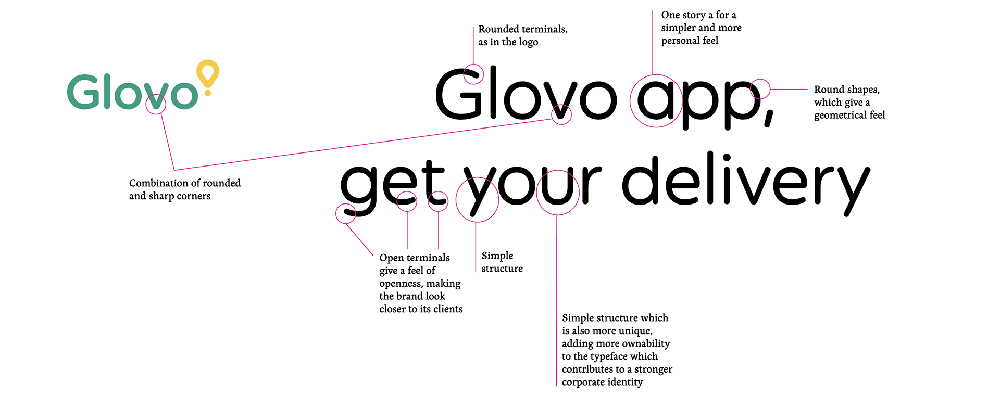
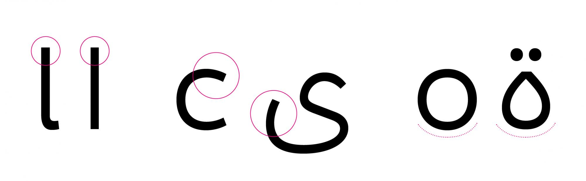
Glovo Sans covers five writing systems, Latin, Arabic, Armenian, Cyrillic, and Georgian, in four weights plus italics (8 styles total), later expanded with Thin and Light for better readability in digital interfaces. Letterjuice put the balancing act well: "Even though it is monolinear it has certain human flair which helped finding the balance to make the design almost monolinear without spoiling the natural flow of the Arabic." The brief itself was a constraint: "They wanted to keep the metrics similar to those of the previous typeface they were using."
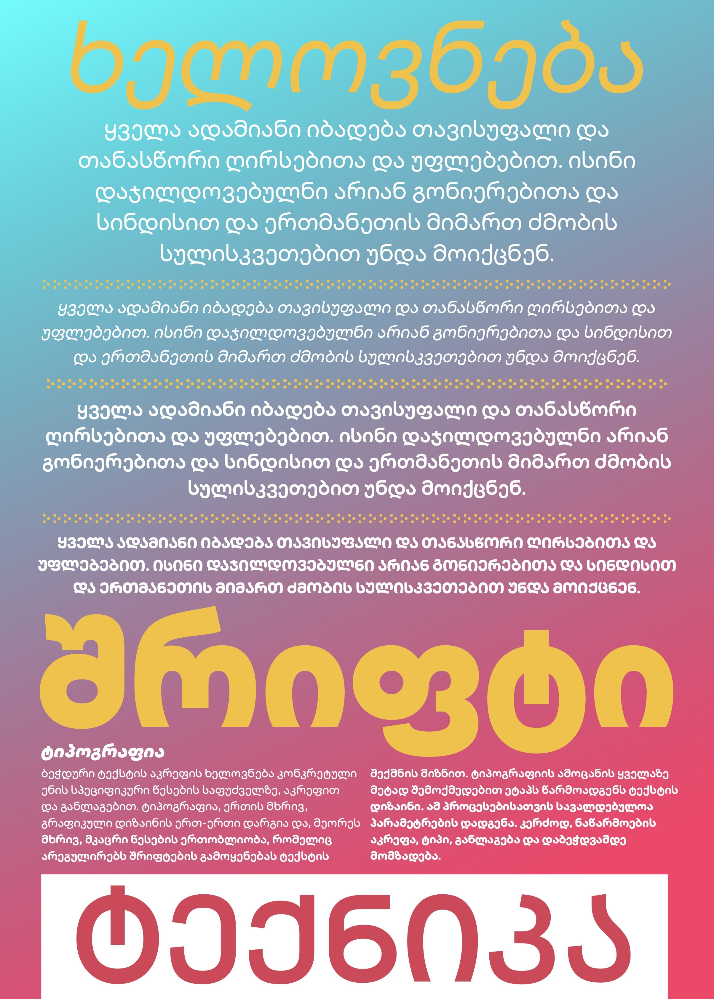
.jpeg)
Glovo Sans Georgian won a Special Mention at the 13th Granshan Type Design Competition, 2023/2024, recognized for cultural inclusion, legibility, and creative flair, a rare industry nod for a corporate typeface almost nobody knows is custom. It isn't publicly licensable, but the full story is on Letterjuice's site and the Granshan showcase.
Grocery and quick commerce meant running product strategy like a retail team
Glovo's next big bet was already taking shape while I was there: grocery and quick commerce, backed by partnerships like Carrefour (France, Spain, Italy) and Kaufland (Romania, Poland), plus investment in Glovo's own Glovo Market dark stores. The company was positioning itself as more than a food delivery app: a retail logistics backbone.
Supporting that meant running product strategy closer to how our ads and retail teams already worked: dedicated OKRs instead of loose roadmap items, close partners brought into the process early, a standing user advisory board, and a beta tester community. We also scaled up research reach through research.glovoapp.com, a public front door for the research team to recruit and stay close to real users at the pace the bet demanded.
None of that ran through me directly; it ran through the researchers I trusted to own it. David Serras Marquès wrote about what it was like managing uncertainty as a UX researcher at Glovo under that leadership, worth reading for the ground-level view I didn't have.
45 customers, no slides, just the app in their hands
Born out of the push to overhaul how the UX team worked and prove its impact on the business, Customer Day became the clearest expression of that research culture: no presentations, no decks, just 45 customers sitting with our tech, product, and data teams, watching how they actually navigate the app. Led by the UX team, it's run every year since, filling an auditorium by its 2026 edition.
Three "mindset" walls organized what came out of it: The Promo Seeker, The Self-Indulgent, The Creature of Habit. The reality check that stuck: user mindsets aren't fixed labels, they're fluid. Someone ordering a quick Tuesday lunch is a different person than the one planning a Friday treat, and the app has to work for whichever one shows up.
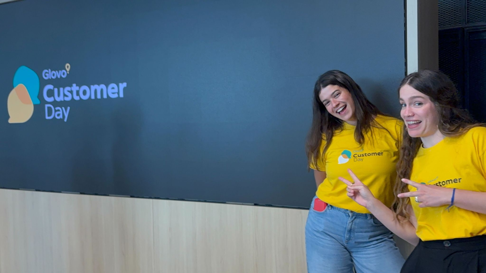
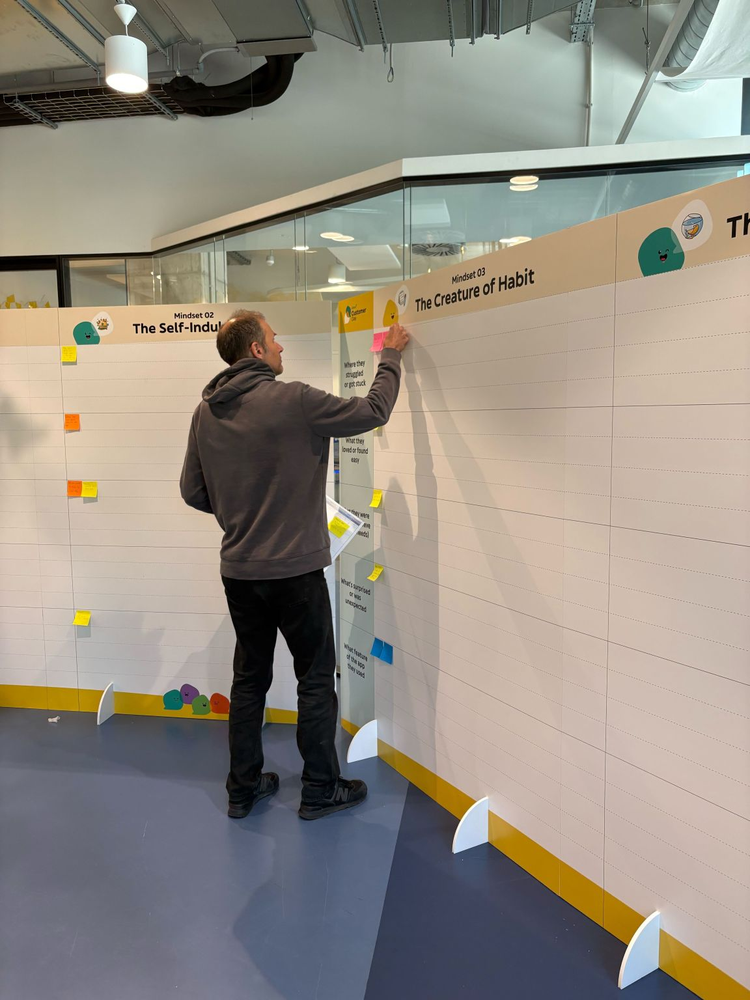
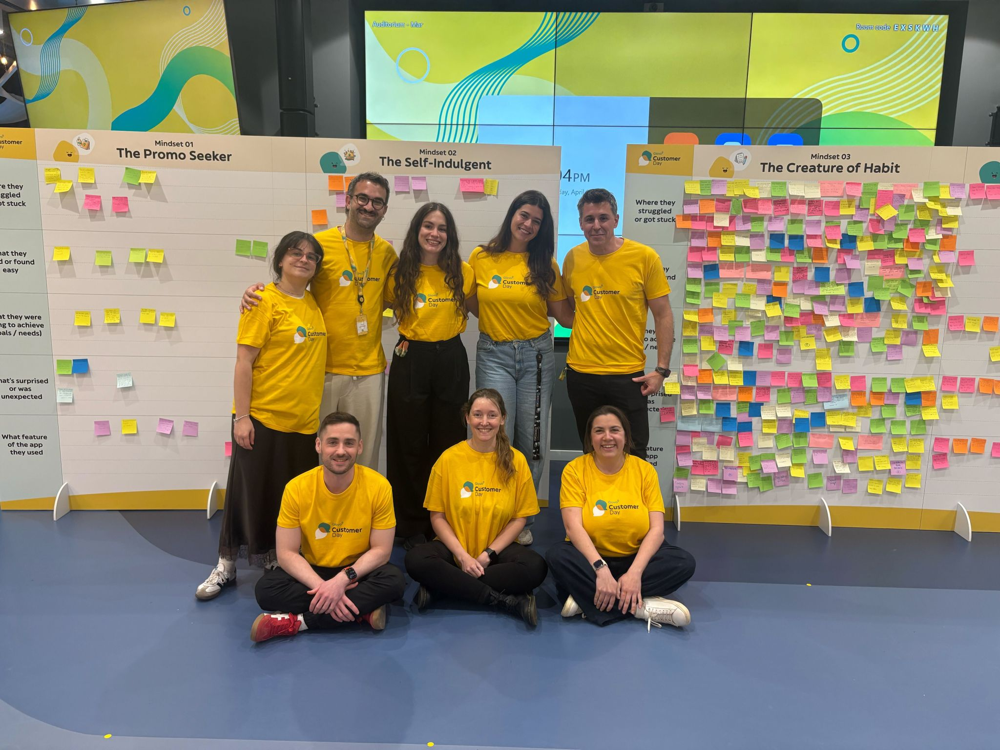
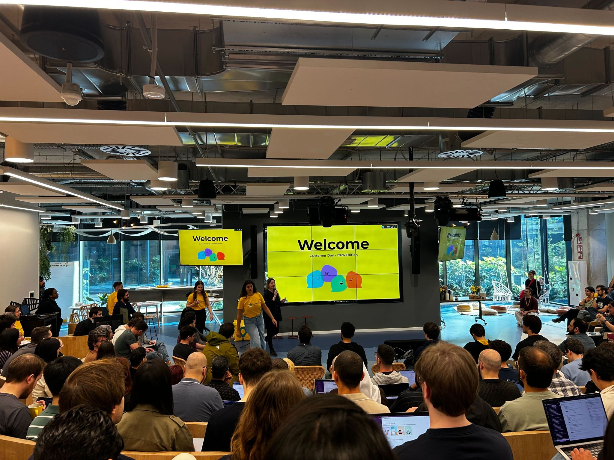
Two other things held up across every conversation: if a customer can't find a feature, it doesn't exist, even if it's shipped for years, and people need trust before they try something new, checking reviews and looking for validation first. Product excellence, in both cases, comes down to reducing that friction.
On leading at scale
Running a 100-person org means most of your impact is indirect. You set direction, build systems, hire well, and get out of the way. The QX program worked not because I designed it alone, but because we built the infrastructure for 100 people to design better, faster, and more consistently.
The social commerce bet kept compounding
In October 2024, over a year after I moved on, Glovo shipped what it called its biggest product overhaul since 2016, built directly on the social commerce direction our team set: a suite of features merging social networking with food discovery. TechCrunch and Tech.eu both covered the launch as the first food-delivery app in the industry to merge social networking with commerce.
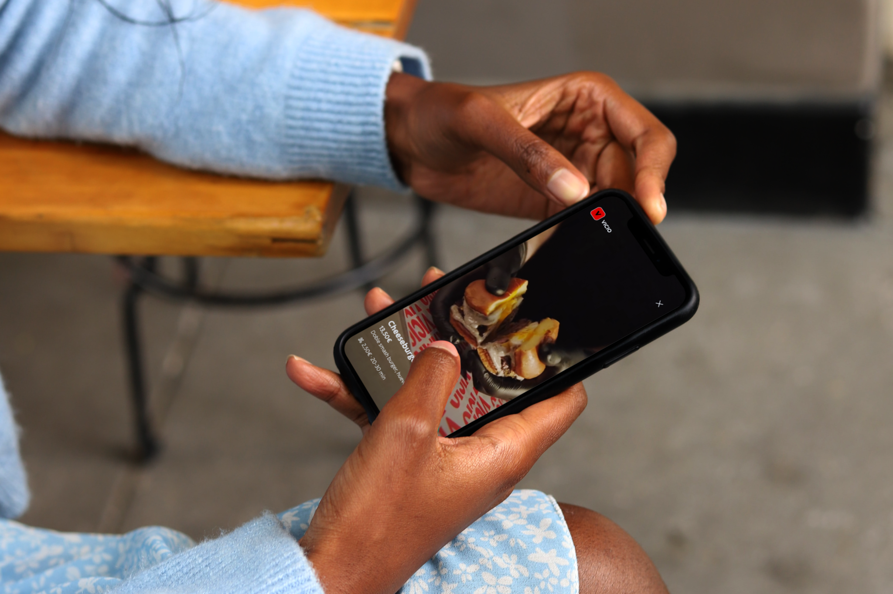
The update shipped three connected features: Picks, letting users save and share curated restaurant and dish lists for occasions like office lunches or dinner with friends; a social graph, matching a user's phone contacts to friends already on Glovo so they can follow each other's recommendations; and a video discovery feed, letting restaurant partners upload short food-prep videos directly into the app. Glovo's leadership cited a stat that shaped much of the original social commerce strategy: 55% of customers already turn to social platforms for food inspiration before they ever open a delivery app. The rollout started in Barcelona before expanding across Spain and, eventually, the other 22 markets Glovo operates in.
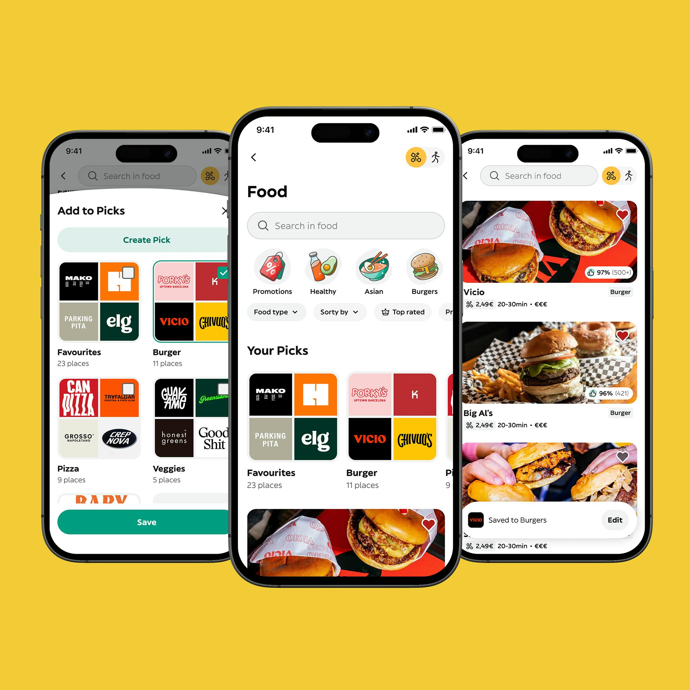
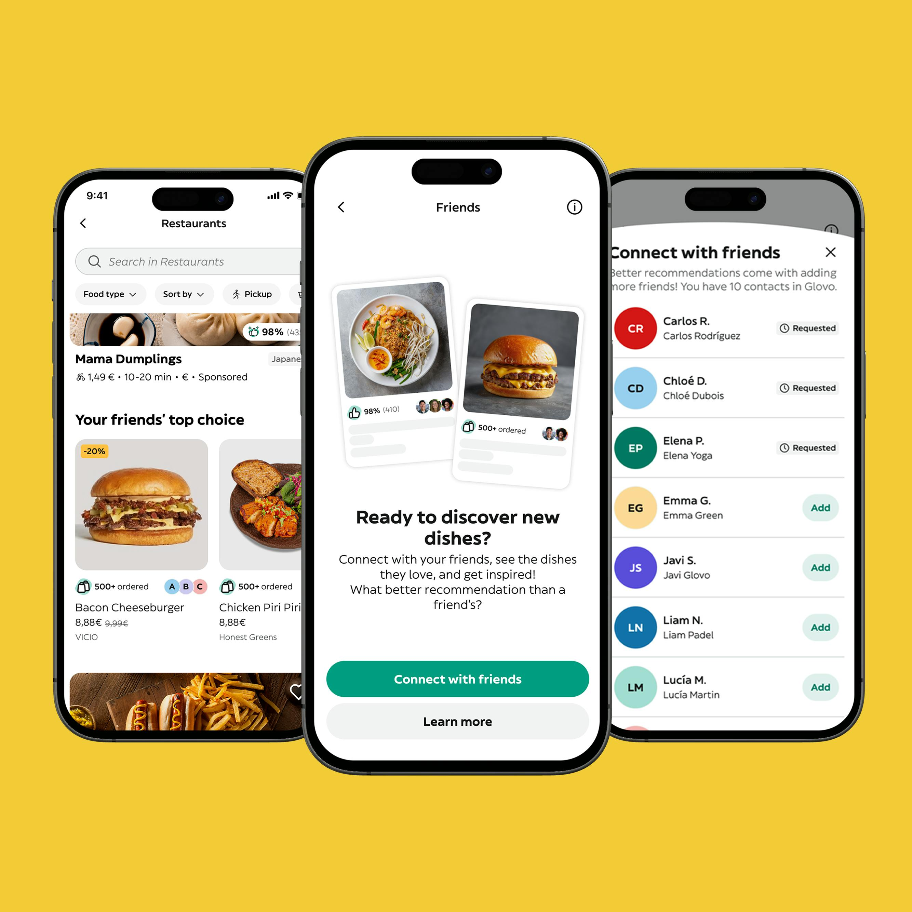
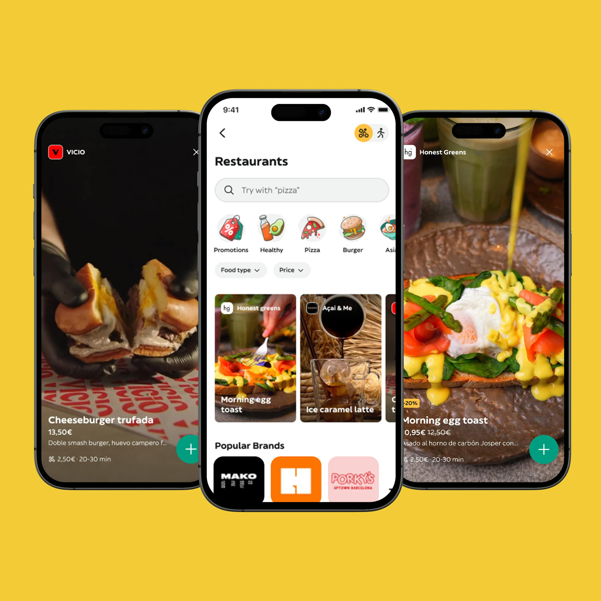
The personalization thread kept compounding too. In June 2025, Glovo redesigned its homepage around occasion-based personalization, launched an AI-powered gifting assistant, added Flash Deals to help customers discover new restaurants, and expanded the social profiles introduced the year before, giving every user a public profile with their Picks and favorite dishes that friends could browse in real time. Some of this took up to 2.5 years to fully ship after I moved on, a reminder that the biggest bets in a 100-person org rarely land on the timeline you originally pitched.
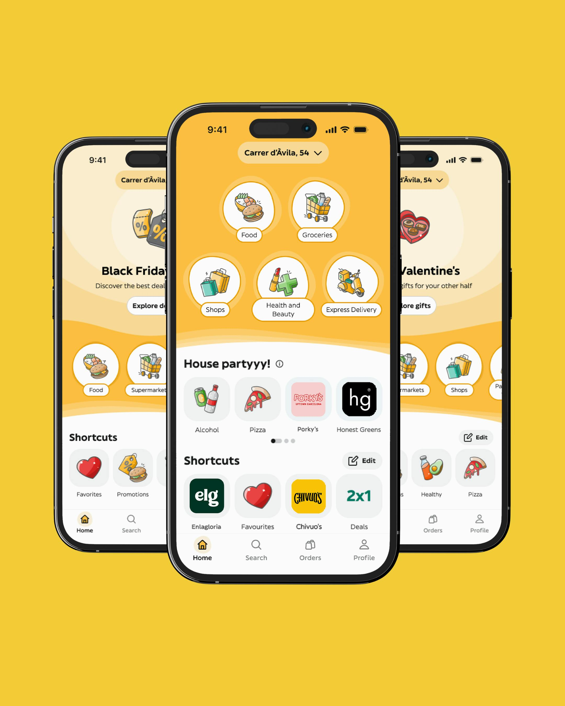
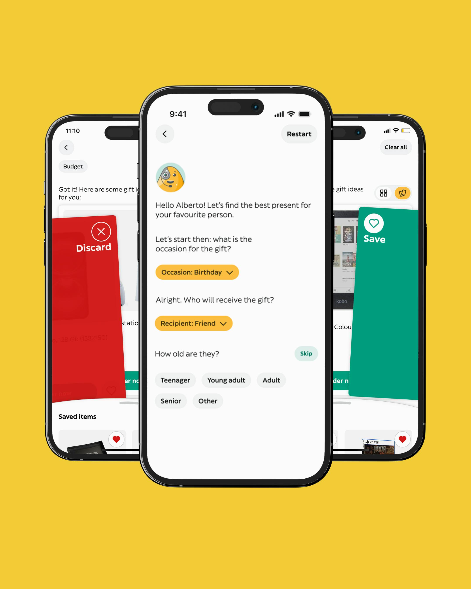
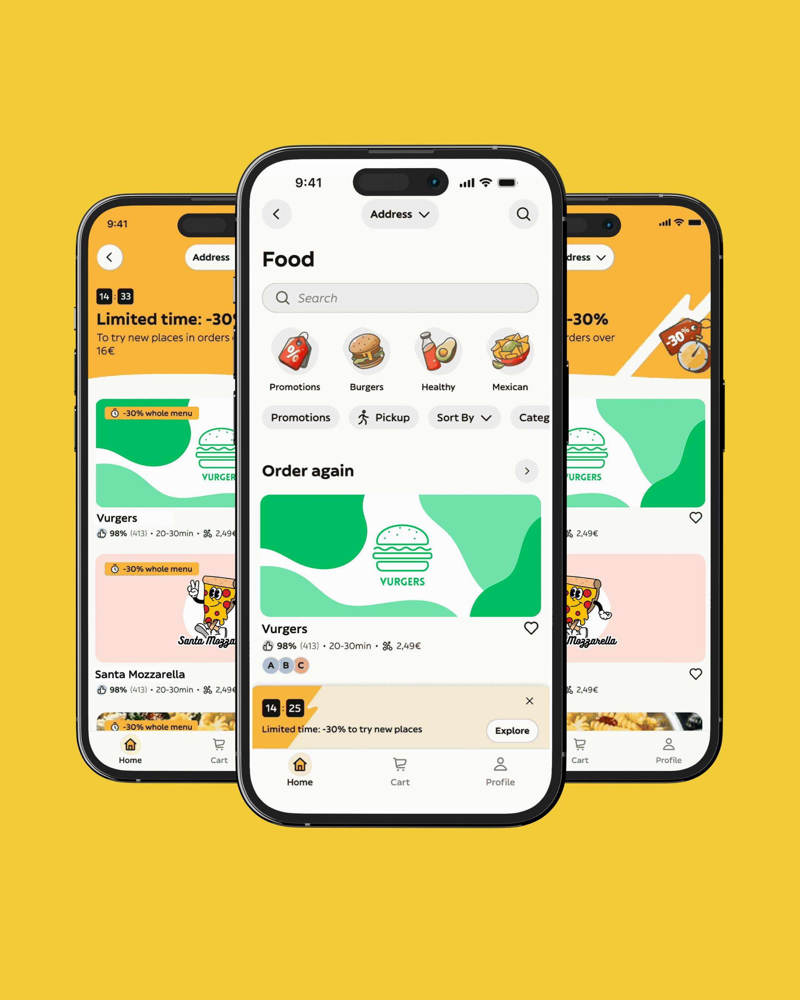
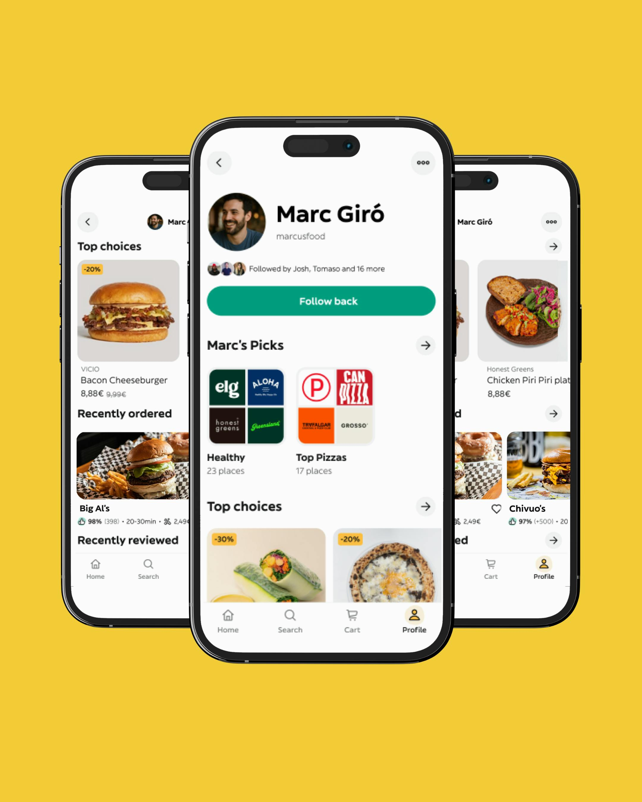
Seeing a strategy I helped set keep shipping and scaling up to two and a half years after I left is the clearest signal I know that the underlying bet, and the organizational muscle we built to execute on it, was sound.